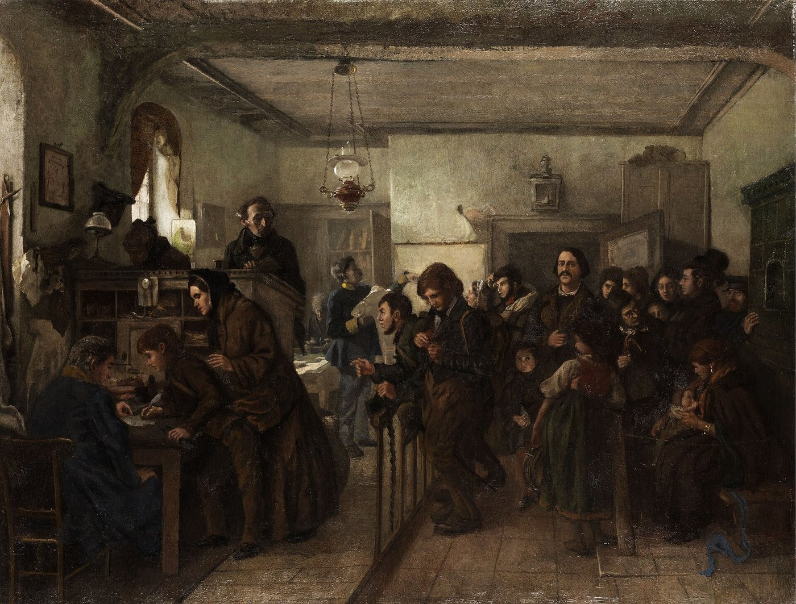
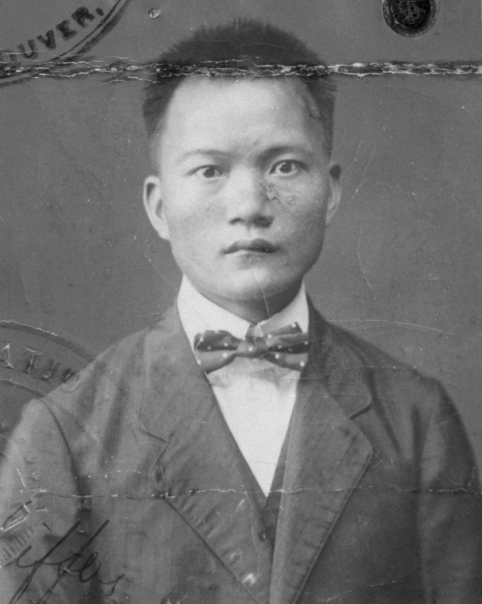

S4 · Closed Doors: The Head Tax and the Komagata Maru
- Who was Clifford Sifton?
- What kind of settler did he want?
- What was “The Last Best West”?
Answer key
- Canada’s Minister of the Interior from 1896 to 1905, who recruited settlers for the Prairies.
- A strong farmer from a farming family, with a wife and many children.
- A government advert of 1907 inviting settlers to the Canadian Prairies.
- understand two laws that closed the door to Asian newcomers
- read an official certificate and a photograph as historical evidence
- analyse the language of an apology
Look at the painting
Describe, then interpretCore
- Where are these people? What are they waiting for?
- Who has the power in this room? How can you tell?
- Why is this painting a good image for this lesson?
Answer key
- In a passport and police office, before emigrating; they are waiting for their papers to be checked.
- The officials at the desks, behind the wooden barrier: they hold the papers and decide.
- Before any journey, someone checks papers and decides who can go or come: the door can be closed.
More than 15,000 Chinese labourers came to Canada to help build the Canadian Pacific Railway. Once the railway was finished, the government decided to stop immigration from China. The Chinese Immigration Act of 1885 imposed a Head Tax of $50 on every Chinese newcomer. It was raised to $100 in 1900 and to $500 in 1903. In 1923, a new law banned most Chinese immigrants until 1947.
Source: Government of Canada, “Prime Minister Harper Offers Full Apology for the Chinese Head Tax”, 22 June 2006.


Read the certificateCore
- What is the name on the certificate, and what is the date?
- How much did he pay, and why?
- How many years after 1885 is this certificate?
Answer key
- Lee Don, 2 August 1918.
- Five hundred dollars: the head tax under the Chinese Immigration Act.
- 33 years.
On 23 May 1914, the steamship Komagata Maru arrived in Burrard Inlet, Vancouver, with 376 passengers from Punjab, in British India: Sikhs, Muslims and Hindus. They were all British subjects. A Canadian law said that immigrants had to arrive by a “continuous journey” from their country, which was impossible from India. Only about twenty passengers, who had lived in Canada before, were allowed to land. On 23 July 1914, the ship was escorted out of the harbour and forced to return to India, where 19 passengers were killed and many others imprisoned.

UnderstandCore
- Why was the Head Tax introduced after the railway was finished?
- Why was the “continuous journey” rule a trick?
- Find two strong adjectives in Harper’s apology.
- What does Trudeau say the passengers did, and what did Canada do?
Answer key
- Canada no longer needed Chinese workers and wanted to stop Chinese immigration.
- No ship could sail from India to Canada without stopping, so the rule excluded Indians without naming them.
- malicious, grave.
- They chose Canada; Canada rejected them.
The language of apologyStretch
Compare the two apologies. Who speaks, to whom, and in whose name? Why apologise when the victims are no longer alive? Write 120 words using to acknowledge, to take responsibility for, to make amends, it was not until… that.
Answer key
Model: Both prime ministers speak in the House of Commons, in the name of the Government of Canada, to the communities and descendants. It was not until 2006 that Canada acknowledged the Head Tax as a “grave injustice”, and not until 2016 that it apologised for the Komagata Maru. The victims cannot hear these words, as Trudeau admits, but an apology takes responsibility for the past, makes amends to descendants and tells newcomers today that the country has changed. Harper also announced symbolic payments to living Head Tax payers and to the living spouses of deceased payers.
Expanding your vocabulary
| Word | Meaning | Example |
|---|---|---|
| a head tax | a tax paid by each person who arrives | Chinese newcomers paid a head tax. |
| to exclude | to keep someone out | The 1923 law excluded most Chinese immigrants. |
| to be denied entry | not to be allowed to enter | Most passengers were denied entry. |
| discriminatory | treating a group unfairly | a discriminatory law |
| to apologise for | to say sorry formally | Canada apologised for the Head Tax. |
| descendants | children, grandchildren and later generations | The descendants heard the apology. |
Petit glossaire en français
head tax : taxe d’entrée · exclude : exclure · denied entry : refoulé · apologise : présenter des excuses · descendants : descendants
In French, explain to your class the difference between a law that names a group (the Head Tax) and a law that excludes a group without naming it (the continuous journey rule).
- Learn the vocabulary.
- Write a short news report (100 words) for a Vancouver newspaper, 24 July 1914.
- Note one place in Vancouver today that remembers the Komagata Maru.